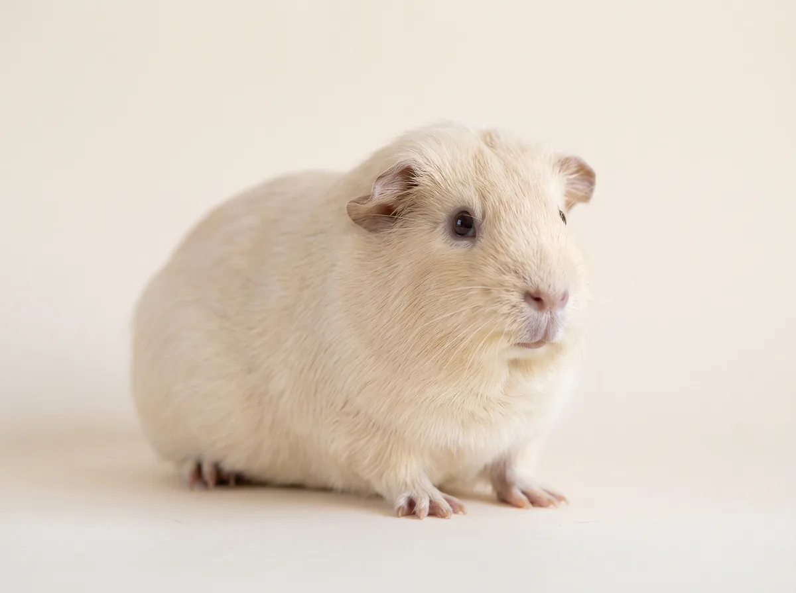
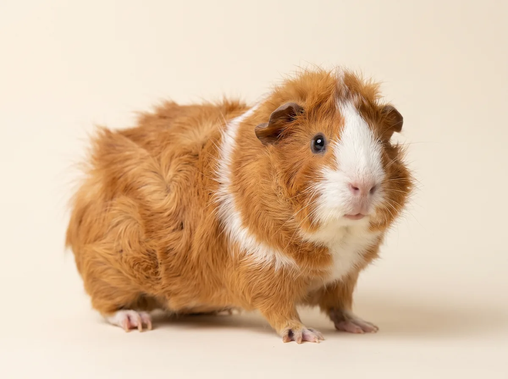
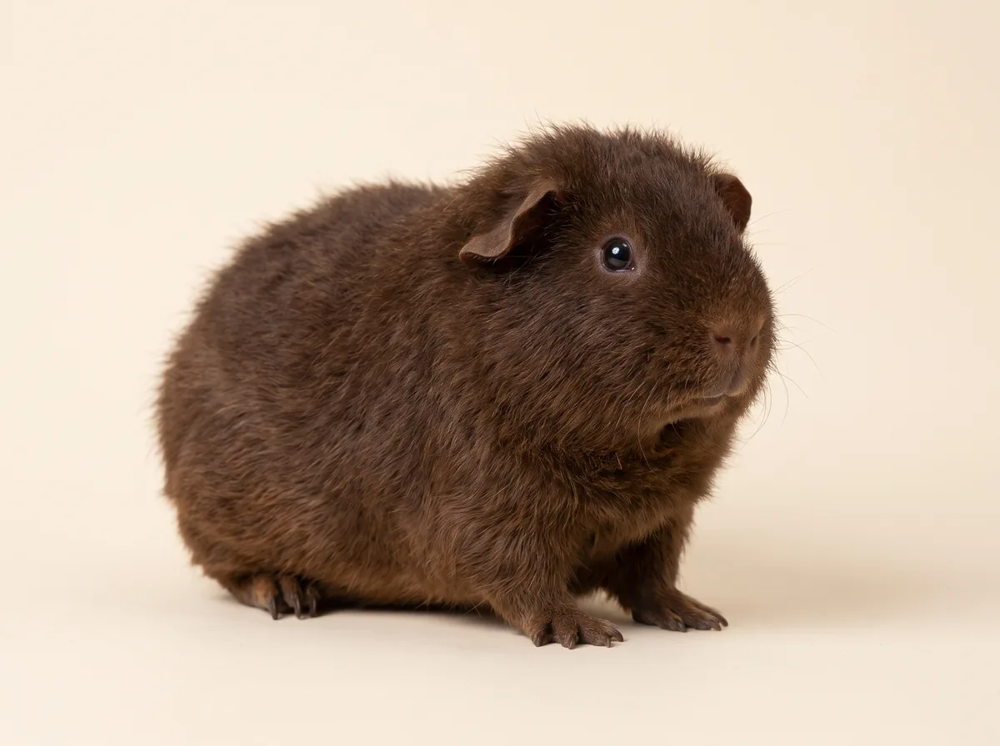
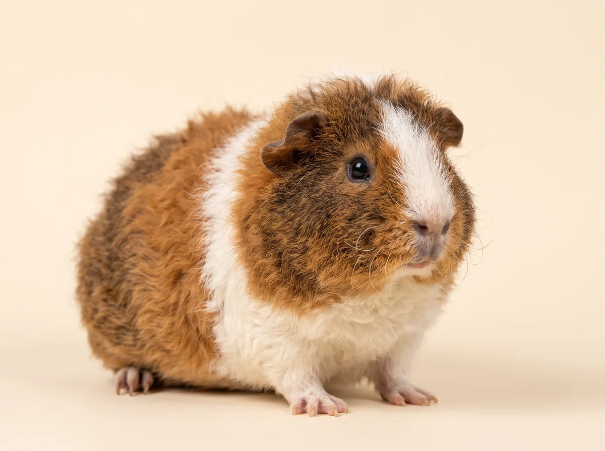
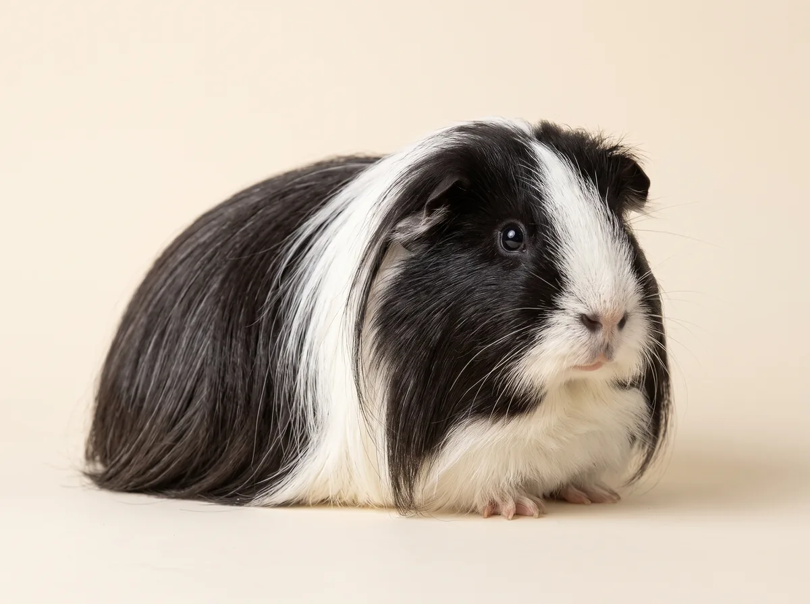
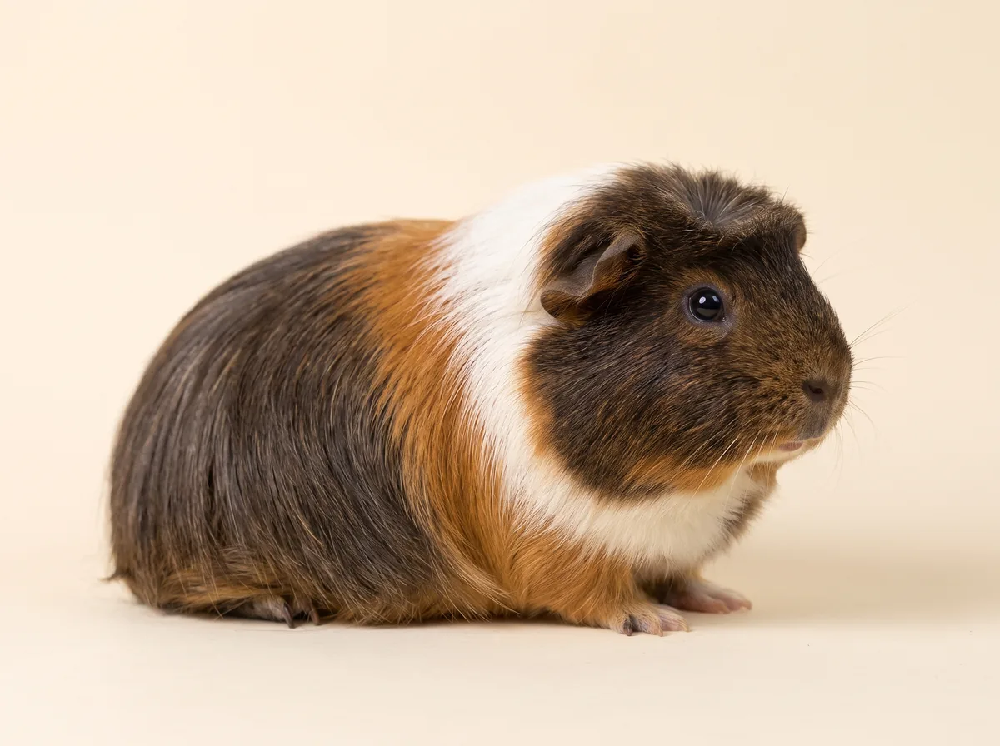
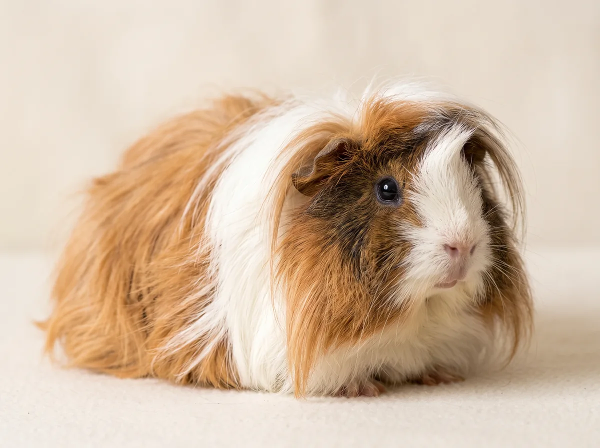
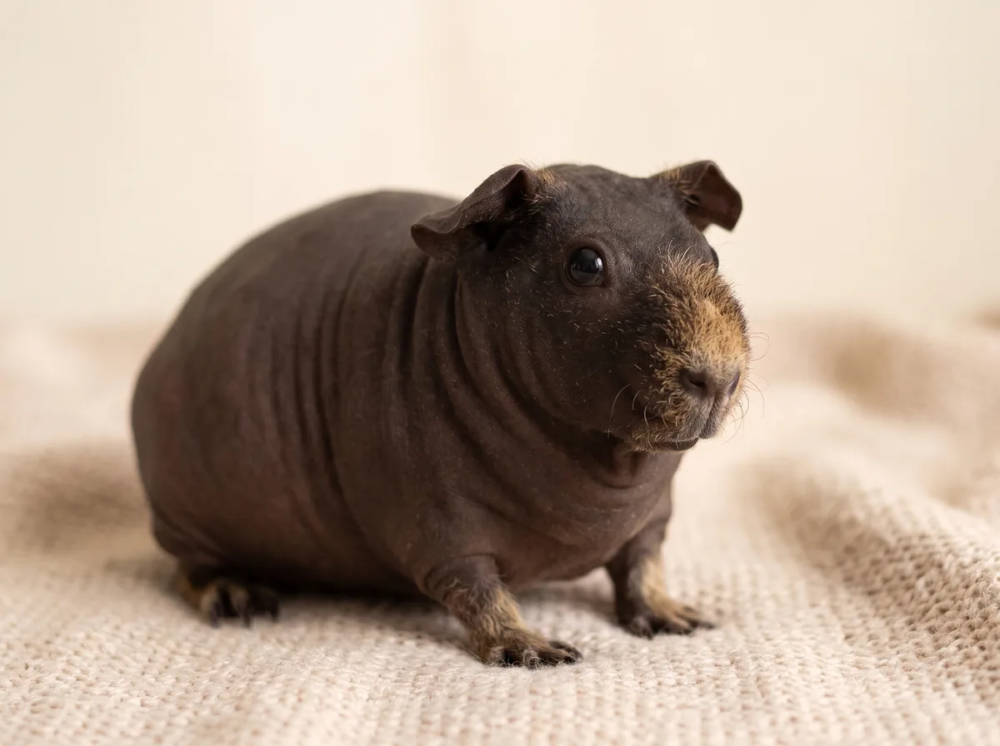

Американская
Подойдёт новичкуКороткая плотная мягкая шерсть. Сложный уход не нужен. Свинки любопытные и мягкие по характеру.
Источник: Chewy: типы морских свинок; Omlet: разновидности морских свинок
От шерсти зависит, сколько времени займёт уход. Поэтому породы разделены на три группы.

Короткая плотная мягкая шерсть. Сложный уход не нужен. Свинки любопытные и мягкие по характеру.
Источник: Chewy: типы морских свинок; Omlet: разновидности морских свинок

Шерсть растёт розетками и выглядит взъерошенной. Свинки бойкие и любят внимание. На выставках их единственных оценивают в движении.
Источник: Chewy: типы морских свинок; Omlet: разновидности морских свинок

Плотная шерсть одной длины, жёсткая и пружинит под рукой. Характер добродушный и спокойный.
Источник: Chewy: типы морских свинок; Omlet: разновидности морских свинок

Шерсть не длиннее 1 см, плотная, стоит прямо от тела. Остевых волос нет, поэтому она на ощупь как шерстяная.
Сейчас в продаже нет
Источник: Omlet: порода рекс

Шерсть растёт всю жизнь и зачёсывается от мордочки назад. К двум месяцам обычно достаёт до пола.
Источник: Chewy: типы морских свинок; Omlet: разновидности морских свинок

Как шелти, но с розеткой-короной на голове. Нужно расчёсывать, купать и подстригать. Характер спокойный и ласковый.
Сейчас в продаже нет
Источник: Chewy: типы морских свинок; Omlet: разновидности морских свинок

Шерсть спадает на мордочку и растёт в разные стороны. Требует много ухода и постоянной стрижки: без неё свинке трудно двигаться.
Сейчас в продаже нет
Источник: Chewy: типы морских свинок; Omlet: разновидности морских свинок

Шерсть только на мордочке и лапах. Нужны стабильные 22–24 °C и корм не менее 18% белка. Легко подхватывает инфекции и не гипоаллергенна.
Источник: Chewy: типы морских свинок; Omlet: разновидности морских свинок
Изображения сгенерированы и показывают примерный вид породы. График ухода за конкретной свинкой обсудите с ветеринаром.